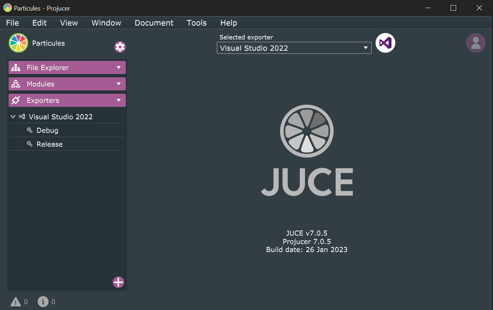
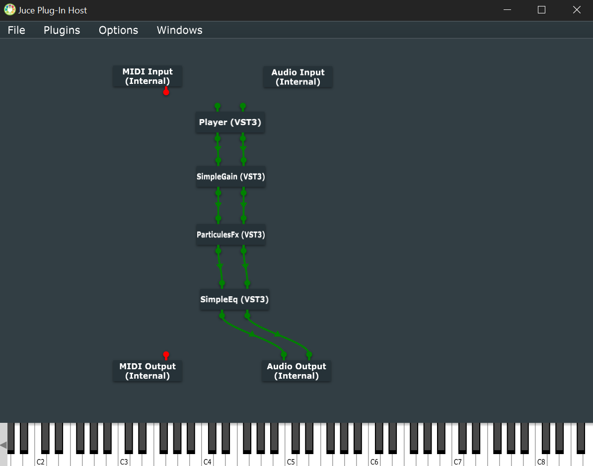
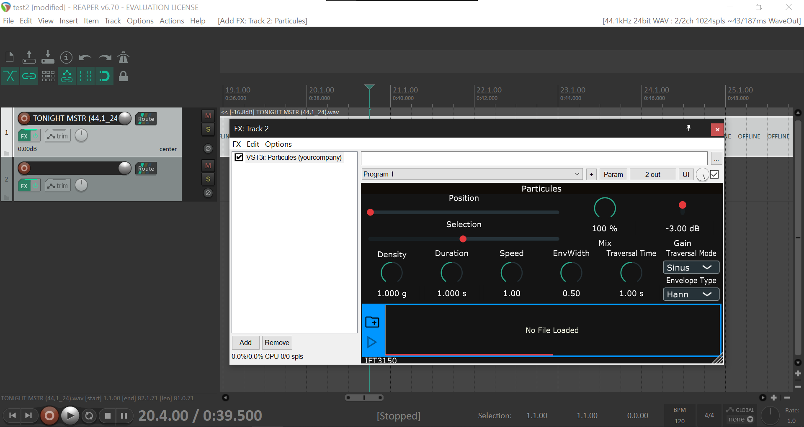
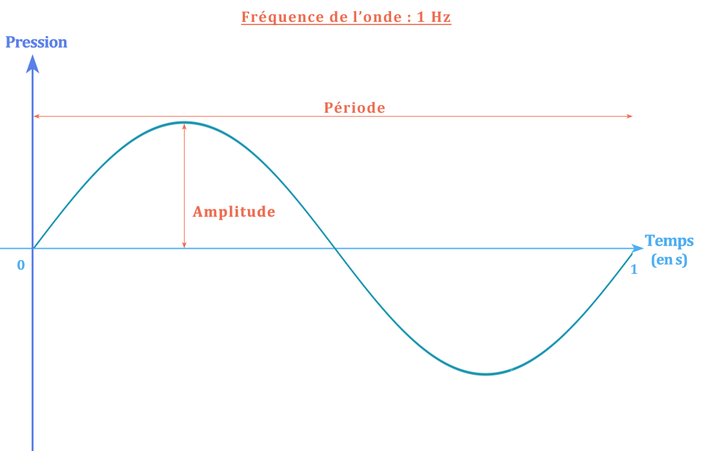
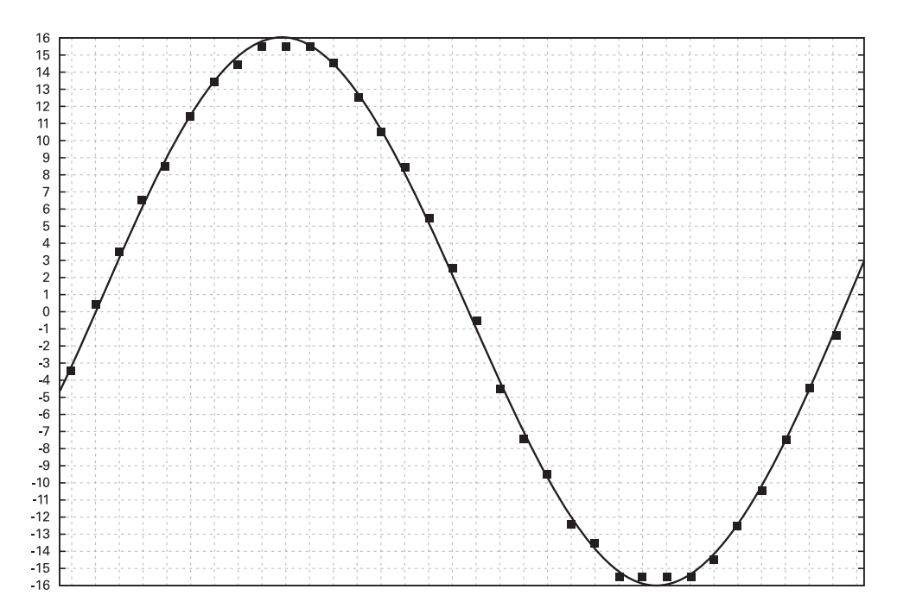
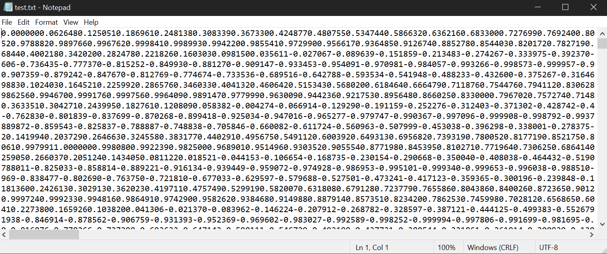
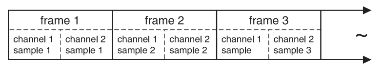

A. OBJECTIFS
Le projet consiste à concevoir un plugiciel de traitement audio. Le plugiciel doit pouvoir être compatible avec tous les DAW (Digital Audio Workstation) soit les séquenceurs. Il doit pour cela être au format VST3 (Virtual Studio Technology).
Le plugiciel doit proposer une interface claire pour l'utilisateur et doit être capable d'effecter une synthèse granulaire sur la source audio définie par l'utilisateur.
B. ENVIRONNEMENT
PROJUCER
Pour l'élaboration de ce projet, j'utiliserai le manageur de projet fourni par JUCE appelé Projucer pour ouvrir le projet. Pour avoir accès au Projucer, il suffit de cloner le repository master de JUCE et de compiler le logiciel. Cela facilite la tâche car le Projucer est responsable de faire le lien entre la librairie principale écrite de JUCE en c++ avec notre projet personnel. Ainsi nous pourrons avoir accès à certaines classes fournie par le concepteur.

C'est ici que l'on configure les principaux aspects de notre projet. Par exemple, s'il s'agit d'un programme qui s'execute à l'intérieur d'un séquenceur ou alors s'il s'execute en autonomie (soit en Standalone). Les paramètres que l'on configre dans le Projucer va avoir deux conséquences concrêtement.
La première conséquence est que cela va pré-configurer l'IDE sur lequel nous travaillons. Sur la photo ci-dessus, on voit que j'utilise Visual Studio 2022. Le Projucer va donc s'en charger de sorte que la bibliothèque de JUCE soit déjà liée à Visual Studio. Donc nous avons tout de suite accès à JUCE très vite et nous pouvons nous concentrer sur le programme que l'on souhaite. Il faut naturellement, lui indiquer le chemin du repository au préalable.
AUDIO PLUG-IN HOST
La seconde conséquence sera les macro qui seront présentes à la création du projet. Nous verrons plus tard que JUCE fonctionne par l'intermédiaire des classes spécifiques. Les macros qui y sont écrites sont générées automatiquement et sont ce qui va définir la compatibilité du programme. Dans ces macros ont peut définir si le programme s'attend à recevoir des informations MIDI par Grâce à JUCE, nous aurons pas à nous en occuper. exemple. Ou alors donner des informations au pré-processeur ou pour le compilateur.
Donc nous allons utiliser le Projucer pour créer les projets, Visual Studio pour écrire le programme et débugger. Et pour effectuer les tests j'utilise le séquenceur appelé Reaper dans sa version gratuite. Dans le séquenceur je peux tester le vst3 dans sa version Release.
Audio Plug-In Host est un autre outil fourni avec JUCE qui permet de faire des liens entre les entrées et les sorties des plugins que l'on créé. Cela permet de créer une chaine d'outil pour essayer son travail dans un petit environnement léger que l'on peut appeler depuis Visual Studio directement.

Il suffit de donner le chemin où sont compilé les projets individuellement et on peut appeler chaqu'un des plugiciels pour qu'ils interagissent entre eux.
GIT
Même si je travaille seul sur ce projet, j'utilise les fonctionnalités offertes par git pour sauvegarder mon travail et aussi me permettre de tenter des choses en créant des branches puis en les mergeant si ma tentative est fructueuse, ou alors en l'abandonnant dans le cas contraire.

REAPER
Ici, le séquenceur DAW que j'utilise sous sa version gratuite pour tester dans un contexte plus réel le plugiciel. Le séquenceur fait référence au chemin du projet ou le vst3 est build et je peux l'ouvrir depuis le séquenceur pour tester d'avantage.

Ici, on voit que le plugiciel est implémentable sur une piste audio. Cependant, il ne prend pas en compte ce qui est sur la piste audio car il override sont entré. Le plugiciel est conçut pour avoir son entré indépendamment de celle de la piste audio. La raison de cela est qu'il s'agit d'un VST de type instrument.
C. PROGRAMMATION AUDIO ET CONCEPTS CLÉS
Après avoir installer JUCE et avant de commencer à me renseigner sur la synthèse granulaire, j'ai du apprendre les fondements de la programmation son. Ici, je vais décrire les aspects importants du son numérique qui seront important pour la compréhension du projet.
CARACTÉRISTIQUE PHYSIQUE DU SON
Le son est une propagation d'une perturbation dans une milieu élastique. Dans l'air cette perturbation possède des propriétés qui ont été beaucoup étudiées. Maintenant, il s'agit de comprendre comment on numériser cette perturbation et aussi comment on la restitue.
Parmi les propriétés d'un son, on peut recencer sa fréquence qui est donné en Hertz. Avec un son pur (un son dont la forme d'onde est sinusoïdal), on peut plus facilement se représenter une fréquence simple. Comme par exemple, le son émit par un diapason peu être considéré comme un son pur, donc composé d'une unique fréquence.

L'onde représentée sur la photo ci-dessus est composée d'une amplitude en plus de sa fréquence. Ces deux caractéristiques devront être décrites numériquement pour transmettre de l'audio.

Pour représenter un son physique vers le monde numérique, on doit échantilloner le son. Pour cela on utilise un ADC (Analog to Digital audio Converter). De manière analogue à ce que l'on fait déjà avec des photographies pour créer de la vidéo, le principe est que l'on capture une multitude d'échantillons sonores que l'on va mettre les uns à la suite des autres afin de les restituer plus tard. Ces informations seront consitué de l'amplitude du sonore capturé, à partir de valeurs discrètes.
THEORÈME D'ECHANTILLONAGE DE SHANNON NYQUIST
Sachant que l'oreille humaine perçoit de l'information sonore ayant une fréquence pouvant aller de 20hz à 20khz, nous devons capturer par principe au minimum 20k échantillons par seconde afin de pouvoir restituer toutes les longueurs d'ondes du spectre fréquenciel audible.
Malheureusement si nous procédons ainsi, nous constaterons un phénomène sonore appelé Aliasing. Comme solution, Shannon Nyquist a trouvé qu'en doublant la période à laquelle le son est capturé, soit la fréquence d'échantillonnage, l'Aliasing disparaissait. Ainsi il élabore son théorème qui est que la fréquence d'échantillonnage doit être supérieur ou égale à la fréquence max du signal.
De ce fait, lorsque nous parlerons de fréquence d'échantillonnage, nous supposerons une valeur de 44.1kHz. Qui est un peu plus du double de la fréquence maximal audible par les huamins (On rajoute 0.1khz à cause de la fréquence de coupure du filtre dans les extra hautes fréquences).
Avec cela en tête, nous savons que le son numérique est une suite de valeur qui correspond à une "photographie" du signal complexe échantillonné à au minimum 2 fois la valeur maximale du signal. Chaque valeur est appelée un échantillon (sample). C'est l'unité que l'on utilisera plus tard.
QUESTIONS RÉSULTANTES
Une difficulté de représenter du son en numérique, c'est de pouvoir penser le son comme un flux. Au début, on parlait du son comme une perturbation par exemple. Il faut donc être capable de restituer les informations à la bonne vitesse.
Est-ce que nos processeurs modernes sont capable de transmettre un flux composé de 44.1k échantillon par secondes ? La vitesse des processeurs se compte en Ghz de nos jours donc c'est bon !
Est ce que le processeur peut fournir ces informations de manière stables ? Oui grâce à une structure de donnée spécialement construite pour ça que nous verrons plus tard et qui est centrale à la programmation son.
QUANTIFICATION
En informatique, les échantillons sont quantifiés par des valeurs double allant de 0.0 pour représenter le silence jusqu'à 1.0 pour représenter la valeur sonore la plus forte possible. La précision avec laquelle on quantifie le son est directement lié avec le nombre de bits utilisés pour représenter ces valeurs. On parle de profondeur de bit. Plus la profondeur est élevée plus on augmente le nombre de bits pour décrire l'amplitude du signal. Par exemple en 16 bits, on peut encoder le son avec 2^16 valeurs.
On a donc pour résumer, la fréquence d'échantillange comme paramètre temporel et la profondeur de bits pour la précision de l'amplitude, sont deux paramètres nécessaires à la représention du son dans le monde numérique. Naturellement, le temps d'un son, le nombre de samples qui le constitue et sa précision sont des paramètres qui vont directement impacter le poids final du fichier après sa conversion.
Voici un petit programme écrit en C, qui reprend toutes ces notions. Au lieu de générer du son dans une sortie audio de l'ordinateur qui contient par défaut un DAC (Digital to Analog audio Converter), le programme va transférer les valeurs dans la sortie standard de l'ordinateur. Ce qui vous permettra de rediriger cette sortie dans un fichier texte. Ce programme est issu du livre The Audio Programming Book qui offre une excellente façon de se représenter le son numérique.
Le programme génère au passage une forme d'onde sinusoïdal à 440hz. Voici le code à rentrer pour le compiler.

D. LE FRAMEWORK
VUE ET CONTROLEUR
Avant de pouvoir expliquer le principe du plugiciel, il est essentiel de comprendre comment JUCE fonctionne de manière générale.
Après avoir configurer le projet depuis le Projucer comme expliqué dans la page d'accueil du rapport. Nous pouvons créer le projet. On lance l'IDE de notre choix depuis le Projucer. Au départ, on constate qu'il y a 4 fichiers présents. Ces fichiers sont en réalité 2 classes consitutés de la partie définition (*.cpp) et la partie déclaration (*.h). Ces 2 classes se nomment PluginProcessor et PluginEditor.
Pour compiler le projet, JUCE utilise ces deux classes de base comme les points d'entrés du logiciel. Il y a de nombreuse MACRO et de définitions pour le préprocesseur dans ces deux classes. On y constate aussi de nombreuse fonctions pré-définities.
Premièrement, on a donc le PluginProcessor qui hérite de AudioProcessor. Cette classe est la première a être instanciée par le programme. Il s'agit du contrôleur du plugin. Il sera responsable de faire le lien entre l'interface utilisateur, le model, et la mécanique derrière le logiciel car c'est lui qui par défaut, instancie l'objet PluginEditor qui lui est la classe relative à la partie graphique exclusivement. Parmi les macro et les méthodes qui y sont déjà écritent dans la partie définition, on constate que le système d'entrés et de sortie du signal est déjà pris en compte dans sa globalité (il est d'ailleurs possible de le changer).
Le plugin démarre donc avec un controleur qui est connecté à une vue. En regardant de plus pret les fonctions proposées on peut comprendre encore un peu plus le fonctionnement. Parmi elles, deux fonctions les plus importantes sont :
prepareToPlay est la fonction qui va initiliser le programme avec des valeurs par défaut avant chaque processus. En contexte, cela signifie que si l'on pause le processus principal, le programme va prendre le temps de rappeler cette fonction pour préparer le programme à jouer de nouveau. Car un plugiciel doit pouvoir répondre aux évenements de manière asynchrone notamment les commandes de l'utilisateur entr'autre.
processBlock est la fonction qui effectue le traitement principal sur flux sonore qui traverse le plugin. Un plugin de traitement sonore prévoit des entrées pour accueillir un flux sonore et des sorties pour retourner le résultat du traitement sur le flux. Il est doit pouvoir agir sur le flux sonore en temps réel.
Comme nous l'avons mentionné plus tôt, JUCE s'occupe de créer les interfaces du plugiciel pour gérer le concept derrière les entrées/sorties sonore. Notre travail concerne essentiellement le traitement du son en prenant cela en compte.
Dans la fonction processBlock, on constate un objet de type AudioBuffer<float> qui est passé en référence à la fonction. Cette variable est en réalité la structure de donnée qui contient les échantillons de sons dont nous avons expliqué la numérisation plus tôt. C'est grâce à cette structure de donnée que la communication entre les blocks de samples peuvent se faire entre l'entré et la sortie. Puisque le passage de la structure est fait par référence, en c++, nous avons qu'à modifier cette structure de donnée et elle sera ensuite passer dans la sortie du plugin.
Un objet de type AudioBuffer<float> n'est en réalité qu'un std::vector paramétrisé au type float. En c++ les variables float représentent des valeurs de 32-bit et nous envoyons en entré des informations sonores d'une précisions de 16-bit minimum et 32-bit maximum. Aussi notons que les informations audios sont distinctes des variables utilisées jusqu'à une certaine mesure. Cela signifie que si nous envoyons un signal 16-bits et que nous traitons ces données avec des variables float 32-bit cela ne signifie pas nécessairement que chaque échantillon audio dispose de 32 bits de précision.
BUFFER ET LATENCE
Au début de la présentation, nous nous sommes demandé comment transférer et restituer un continuum sonore de manière stable. La structure de donnée du Buffer répond à cette problématique. Elle fonctionne comme un cache. La taille du cache aussi appelé 'Block' est toujours établie avec une rapport de 2 puissance N. La taille du cache aura des conséquences concrètes sur la gestion du plugiciel et notamment sur sa latence générée. Par exemple, un cache d'ordre 6 donnera un block de 64 échantillons. Ces échantillons seront traiter à la vitesse du processeur en fonction de sa capacité au niveau du système d'exploitation mais ils seront restitués à la fréquence d'échantillange du projet.
Avec une taille d'ordre N = 11 cette fois, on obtient.
Donc il y a un temps entre l'activation du processus par l'utilisateur, le remplissage du buffer interne, le temps que le traitement itère sur chaque échantillons du buffer et que le buffer finalement retourne sont contenue. Il ne peut pas y avoir de son dans le premier block tant qu'il n'est pas passer à travers le système.
Ces calculs de latences sont basés sur l'hypothèse que le processeur est toujours plus rapide que la fréquence d'échantillonnage. Si le processeur est occupé par d'autres processus parallèles alors il se peut que le temps à effectuer des context switch ralentisse la rapiditer effectuer du processeur à traiter chaque échantillon de la structure de donnée. Dans le cas où le processeur est surchargé, on pourra constater des mise en pauses ponctuelles du traitement sur le flux.
Nous avons vue que cette notion de taille du buffer est centrale au travail que nous allons faire pour répondre à notre objectif d'implémenter la synthèse granulaire. Nous verrons que nous allons devoir prendre le concepte de block en compte dans le code pour travailler sur ce flux.
CANAL
En programmation audio, il y a aussi le principe du nombre de canaux utilisés qui est important à prendre en compte. Selon ce que l'on souhaite diffuser ou encore le système son utiliser, on veut pouvoir être compatible avec plusieurs canaux. Comme on peut le voir sur la photo ci-dessous, on multiplie le nombre d'échantillon de départ pour chaque canal que l'on rajoute. Les canaux sont compris dans la structure de donnée de buffer.

Plus communément, puisque les êtres humains possède une paire d'oreilles, nous travaillerons en stéréo (2 canaux). Mais il est possible d'ajouter ou de soustraire des canaux à volonter selon la compatibilité du système sur lequel le plugin est implémenter. Apriori le framework JUCE, n'a pas de limitation quand au nombre de canaux.
Aussi, il en va de soit que la valeur de l'échantillon 1 correspondant au canal 1, ne contient pas nécessairement la même valeur que sont homolgue dans le canal 2.
E. DIFFICULTÉS ET CONTRAINTES
-
Réussir à mesurer les besoins et la quantité de travail que ce projet allait requérir.
-
Savoir par où démarrer le projet et élaborer un ordre de priorité d'étapes.
-
Maitriser certains aspect du langage c++ comme les pointeurs spéciaux et la gestion de la mémoire.
-
Comprendre les spécifications du Framework et surtout comment certains objets fonctionnent ensemble.
-
Trouver la bonne architecture à donner au plugiciel pour optimiser son fonctionnement.
-
Trouver des ressources relatives à la synthèse granulaire et à la programmation audio en générale (livre, tutoriel, article de presse, exemple de codes).
-
Apprendre les fondamentaux sur lesquels reposes la programmation audio.
F. LISTE DE RÉFÉRENCE
BIBLIOGRAPHIE
- Richard Boulanger, Victor Lazzarini : The Audio Programming Book (2011)
- Eduardo Reck Miranda : Computer Sound Design - Synthesis techniques and programming (2002)
- Ross Bencina : Implementing Real-Time Granular Synthesis (2001)
- Pierre Schaeffer : A la recherche de la musique concrète (1952)
- Truax B : Real-time granular synthesis with a digital signal processor (1988)
TUTORIELS
OPEN SOURCES CODE
- Olivier Bélanger : Soundgrain
- Raffael Seyfried : GRNLR
- Anthony Brigante : GranularSynth
- HiFi-Lofi : AudioFFT (librairie externe pour transformée de Fourier)
- Stephen Kyne : Phase Vocoder (2010)